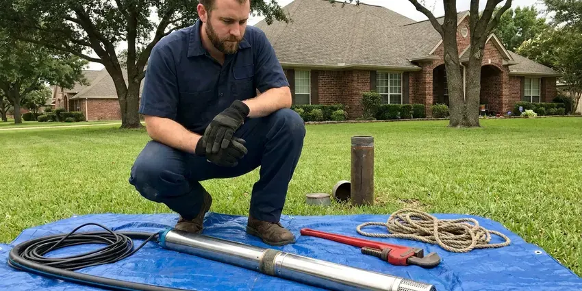
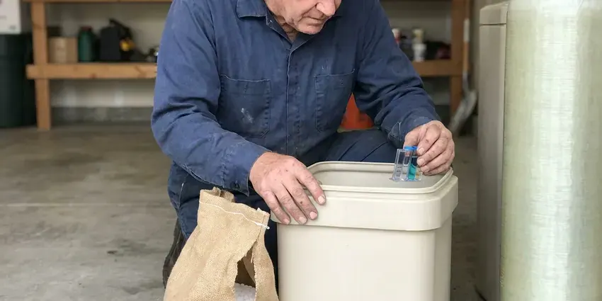

Drain Repairs in Springfield, OH
Gurgling drains usually point to a vent problem. HRL Plumbing checks the vent and the line for homes in Springfield, OH.
- Vent & Trap Repairs
- Local Springfield Plumbers
- Flow Tested on Every Job
- Camera Diagnosis When Needed

Fix the Drain That Keeps Backing Up in Springfield, OH
Camera when it is needed, wrench when it is not.
Drain Repairs in Springfield, OH
HRL Plumbing treats a drain that clogs every month as a repair problem. Cleaning alone will not stop it. Hard water scale, grease, poor slope and broken fittings all cause repeat clogs, and a camera or a close look at the trap arm usually tells us which one you have, so the fix targets the real cause instead of the symptom. Water runs full blast before we pack up.
Our expertise includes:
- P-trap, tailpiece and slip-joint replacement under sinks and vanities
- Clear and diagnose clogs with augers and cameras
- Cast iron and ABS drain section replacement inside walls

Additional Plumbing Repair Services in Springfield, OH
We offer expert plumbing repair services across Springfield, OH to stop leaks, clear blockages, and keep every fixture working the way it should.


Well Pump Repair in Springfield

Water Softener Repair near Springfield

Customers
Why Choose HRL Plumbing for Drain Repairs in Springfield, OH?
A drain that clogs every few weeks is telling you something. Usually it is the pipe. We look for the sag, the bad fitting or the missing vent before we quote, since a single repair usually beats a year of repeat cleanings on price. The repeat calls end.
- Warranty, Workmanship is warrantied in writing, and the parts carry their own warranty.
- Flow Tested, Every repaired drain is run at full volume before we call it done.
- Licensed Plumbers, Licensed Ohio plumbers do every drain repair.
Citywide Coverage
Our service area covers Springfield and the towns around it. Same-day visits are common. Homeowners, landlords and small businesses all use us because the drain stays fixed after we leave.
Experienced Team
Our plumbers have repaired every kind of drain, from a loose slip nut to a cracked cast iron stack inside a plaster wall. They work fast. A plumber who has pulled hundreds of traps can tell a scale problem from a slope problem in a minute, and that experience keeps the repair pointed at the real cause.
Safety-First Approach
Drain repairs have to keep sewer gas out of your home. Traps and vents matter. We install traps, vents and cleanouts to code, correcting any S-trap or missing vent we are already working on.
Trusted Certified Springfield Plumbing Services Professionals
At HRL Plumbing, we are proud to offer certified plumbing services throughout Springfield, OH. Those papers on the wall mean something. Our plumbers hold recognized industry credentials, and they follow strict safety and quality rules on every repair, installation and maintenance call we run.
Call Us Now PHCC Plumbing Contractor Recognition
PHCC Plumbing Contractor Recognition Better Business Bureau (BBB) Accreditation
Better Business Bureau (BBB) Accreditation Angi Certified Pro
Angi Certified Pro ISO 9001 Quality Management Certification
ISO 9001 Quality Management CertificationDrain Repair Jobs We Handle in Springfield, OH
Tub and Shower Drain Repair in Springfield, OH
Hair, soap scum and minerals narrow bath drains over time. Gaskets fail too. We replace worn pop-up assemblies, broken tub shoes and leaking shower drain bodies, and failed drain gaskets can usually be replaced from above without cutting into the ceiling below. Any access hole is kept small and neat.

Cast Iron Drain Stack Repair in Springfield, OH
Old cast iron stacks rot from the inside out. The bottom goes first. Rust scale catches debris and hairline cracks let water seep into walls and floors, and we replace the bad length with plastic pipe joined to the old iron with shielded couplings. If the whole stack is failing, we price it separately.
Sewer Drain Line Repair in Springfield
Every drain in the house empties into one building drain. One blockage, every fixture. Cracks, offsets and collapses in that line cause whole-house backups, and we repair them with trenchless methods when the pipe qualifies or a small targeted dig when it does not. The camera tells us which.
Laundry and Floor Drain Repair in Springfield
A washer dumps a lot of water fast. Undersized drains spill over. We correct standpipe height, replace cracked laundry box drains and add venting where it is missing, then refill or repair floor drain traps so they hold water and block sewer gas. Trap primers get repaired too.
Kitchen Branch Line Repair in Springfield
This branch takes more grease and food than any other line in most homes. Buildup gets deep. We replace cracked tailpieces, fix slip nuts and correct trap height, and when grease has built up deep in the branch, we jet it clean and check the slope so it does not come right back. We look at the disposal outlet too.
Main Line Drain Repair in Springfield
A problem in the main line shows up at every drain in the house. The lowest fixture backs up first. Roots, cracks from ground movement and collapsed sections are the common causes, and we confirm which one on camera, then choose between a spot repair, lining or new pipe based on the video. You see the footage first.
Emergency Drain Repairs in Springfield, OH
A drain that bursts under a sink can soak a cabinet in minutes. Stop using that fixture. We answer after hours, talk you through stopping the flow, and get a plumber there to isolate the damaged section and make a permanent repair whenever the parts allow it. We also flag any wet drywall.

After-Hours Drain Repairs in Springfield, OH
Backups and burst drain pipes do not keep business hours. We answer anyway. An after-hours plumber in Springfield can clear a main line backup, stop an active leak and fix the damaged pipe the same night in most cases, since the trucks are stocked for it. Larger repairs go on the next morning's schedule.
Drain Repairs Near Me in Springfield, OH
Most drain repairs in Springfield are scheduled within a day. Leaks move up the list. Phone (740) 449-7505 with which drain is failing, and the dispatcher will tell you whether to keep using it until the plumber arrives.
A leaking drain in Springfield gets worse every time someone runs water. Delay costs more. We book drain repairs across the Springfield area, give you a written price before we start and flow test the repair before we leave.
HRL Plumbing at a Glance
- Licensed and insured plumbers serving Springfield, OH
- Same-day appointments and 24/7 emergency response
- Clear written estimates, no hidden fees
- 4.9-star rated by 673+ Ohio customers
Springfield Map
Springfield Information
- Population
- 58,082
- Area codes
- 937/740/513
- Service area
- Springfield and communities within 40 miles
- Nearby
- Dayton, Kettering, Dublin, Middletown
Drain lines in Springfield, OH narrow over time as mineral scale and grease build up inside, and worn fittings start to leak. Private wells serve many rural homes, and iron, sulfur and hardness are common issues that call for filtration or softening.
Expert Services
Reach out to HRL Plumbing for honest, reliable plumbing from people who know the trade in Springfield, OH.
Our Specialized Plumbing Services in Springfield, OH
At HRL Plumbing, we handle the full list of plumbing services across Springfield, OH. We go from leak detection all the way to full system installations, for homes and commercial buildings, and we do it quickly at a fair price. Take a look at our core services below:


How a Drain Repair Goes in Springfield, OH
What to expect from the first phone call to the final flow test.
Describe the Drain
Call (740) 449-7505 and tell us which drain is giving you trouble and when it started.
Diagnose the Drain
We inspect the trap, pipe and vent and camera the line when needed. You get a firm price.
Repair and Flow Test
We replace the failed parts and run water at full volume. Joints get checked and the area gets cleaned.
Frequently Asked Questions About Drain Repairs in Springfield
A simple clog clearing starts around $150. Bigger repairs climb fast. Complex main line repairs can run past $3,000, with the type of drain, how bad the damage is and how hard the pipe is to reach setting most of the price. You get a written number after diagnosis.
Call us if a plunger or a small hand snake has not cleared it. Same goes for repeat clogs. Multiple slow drains, sewer smell or water coming up in a different fixture than the one you are using point to a blockage or defect past the reach of a home snake. Those call for professional equipment.
We install PVC and ABS for most new drain work. Cast iron where needed. Cast iron still makes sense in some multi-story walls where noise matters, and we tie new pipe into existing metal drains with listed transition fittings. Every part meets code.
Not with regular use. Older drains suffer the most. Harsh cleaners can soften ABS glue joints and corrode metal drain parts over time, and they rarely remove grease or scale completely, so the clog comes back. A drum auger or jetter is safer.
Slow drains, gurgling and sewer smell are the big three warnings. So is water under the sink. A drain that clogs again a few weeks after it was cleared, or a stain on the ceiling below a tub or shower, means the pipe or a fitting needs repair rather than another cleaning. Small leaks get worse.
A trap swap or a fixture drain fix is usually an hour or two. Bigger jobs run past a day. Replacing a section of main line can take a full day or several days, with permits and digging as the main things that stretch it out. The schedule is in the quote.
Hydro-jetting scours the pipe with water at several thousand psi. It cleans wall to wall. A snake only punches a hole through a clog, but a jet nozzle strips buildup off the entire pipe wall. We camera first on old or brittle pipe.
We do. Length depends on the repair. A trap replacement and a cast iron stack swap carry different terms because the parts and the risks are different, and your plumber explains exactly what is covered before the work starts. Parts makers add their own coverage.
Hear From Customers Who Hired Our Plumbing Experts

Diane F.
My kitchen faucet had dripped for months and I finally got tired of hearing it at night. HRL Plumbing came out the next morning, replaced the cartridge and the O rings, and tightened a loose base that was letting water under the sink.
Faucet Repair · Dublin, OHAngela D.
Our sump pump quit during a storm and the water was an inch from the basement carpet. HRL Plumbing put in a new pump with a battery backup that same evening. We have had two heavy rains since. It kicked on both times.
Sump Pump · Dublin, OH
Robert G.
The camera showed a full break in our clay sewer line near the street. HRL Plumbing replaced it with a trenchless pipe burst, so the only digging was two small pits in the yard. They let us watch the footage before and after.
Sewer Line Replacement · Dayton, OH
Rachel N.
Hard water was leaving white crust on every faucet and our dishwasher was struggling. The tech tested the water, recommended a softener sized for a family of five, and installed it with a bypass valve in one afternoon. The spots on our glasses are gone.
Water Softener · Springfield, OHKevin O.
Before buying our house I paid for a sewer camera inspection. HRL Plumbing found a belly in the line that held standing water about forty feet from the cleanout. We used the video to get the sellers to fix it before closing.
Sewer Camera Inspection · Dublin, OHKaren W.
After our third pinhole leak in copper, we stopped patching. HRL Plumbing gave us a written plan room by room and repiped the house in PEX while we stayed in it. The crew covered our floors every morning and cleaned up every night.
Repiping · Dublin, OH